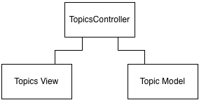

So Rails offers a simple way to kickstart the process for you
The scaffold generator creates a basic CRUD structure for your app.
rails generate scaffold topic title:string description:text
rails generate scaffold topic title:string description:text
rails generate scaffold topic title:string description:text
rails generate scaffold topic title:string description:text
invoke active_record
create db/migrate/20161120235121_create_topics.rb
create app/models/topic.rb
invoke resource_route
route resources :topics
invoke scaffold_controller
create app/controllers/topics_controller.rb
invoke erb
create app/views/topics
create app/views/topics/index.html.erb
create app/views/topics/edit.html.erb
create app/views/topics/show.html.erb
create app/views/topics/new.html.erb
create app/views/topics/_form.html.erb
invoke helper
create app/helpers/topics_helper.rb
$ rails db:migrate
== 20161120235121 CreateTopics: migrating =====================================
-- create_table(:topics)
-> 0.0015s
== 20161120235121 CreateTopics: migrated (0.0016s) ============================
class CreateTopics < ActiveRecord::Migration[5.0]
def change
create_table :topics do |t|
t.string :title
t.text :description
t.timestamps
end
end
end
rails server
And open your browser at http://localhost:3000/

The models represent the data your application handles, mostly stored at the database.
Views represent the pages your user sees and interact with in your application.
Performs the bridging between views and models, showing and collecting data from views and interacting with models.
Demo time!
Partial views (views with names that start with _) are meant to be reused by other main views in your app.